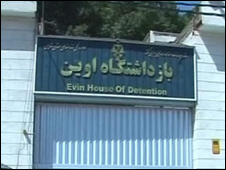

پذيرش > اخبار > روایت زندانیان سیاسی زن از دو سال بازداشت و زندان


 روایت زندانیان سیاسی زن از دو سال بازداشت و زندان روایت زندانیان سیاسی زن از دو سال بازداشت و زندان
7 خرداد 1390 - - نسخه قابل چاپ
کلمه: زندانیان سیاسی زن محبوس در زندان اوین همزمان با فرارسیدن روز زن با انتشار بیانیهای ضمن تبریک این روز به همه زنان ایران، با تشریح وضعیت خود، توجه مقامهای قضایی را به رفتارهای غیرقانونی صورت گرفته با خود، جلب کردهاند.
متن کامل این نامه که در اختیار کلمه قرار گرفته، به شرح زیر است:
در امتداد عصیان
در امتداد صلح
زن، همچو پل
با دستان پر توانت بنشان نهال نازک فردای تازه را
تا ریشه گسترد و بارور شود، میوه دنیای روشنی
آکنده از برابری
آکنده از عدالت و آزادی
پر از کرامت انسانی
اکنون دو سال از زمان برگزاری انتخابات پر مناقشه ریاست جمهوری در سال ۸۸ میگذرد، دو سالی که کشور صحنه درگیریها و زد و خوردهای بسیاری بود. شمار زیادی از افراد در خیابانهای شهرمان کشته شدند و سبیاری از زنان و مردان به ناحق، روانه بازداشتگاهها شدند. دو سال گذشته است و ما همچنان دور از خانه، در آرزوی فردای آزاد، روزهایمان را در چهاردیوار زندان شب میکنیم و تنها امید به فردای روشن است که نمیگذارد زیر بار نامردمیها و جفایی که در حق ما روا داشتهاند کمر خم کنیم.
ما شماری از زنان زندانی اعتراض های پس از انتخابات هستیم که همگی با اتهامات واهی و تکراری، به سالها حبس و دوری از خانه محکوم شدهایم. امروز در آستانه روزی که در این سرزمین به نام ما” زنان” نامگذاری کردهاند، لازم دیدیم این نامه را خطاب به شما بنویسیم تا هم از جفایی که بر ما شده است نگاشته باشیم و هم پیام پر مهرمان را همراه این نامه به مادرانمان که دو سال پشت دربهای زندان صبوری کردهاند، برسانیم و این روز به آنها تبریک بگوییم. ما شرمگین دلتنگیهایشان هستیم، اما چه کنیم که تاوان آزادیخواهی در این سرزمین از دیرباز تاکنون، چنین بوده است و ما تنها برای آزادی زیستهایم.
همه ما در دوران بازداشت روزهای سختی را تجربه کردهایم. با این وجود در ماههای گذشته کمتر از هر مسألهای به آنچه بر زنان سیاسی در طول دوران بازداشت رفته است توجه شده، از همین رو لازم میدانیم جهت تنویر افکار عمومی تنها به ذکر گوشهای از اعمال غیرقانونی روا داشته شده بر خود بپردازیم.
۱٫متاسفانه، از آنجا که همه چیز در این کشور بر مبنای مرزبندی زنانگی و مردانگی است، آنچه در اتاقهای بازجویی بر شماری از بازداشتشدگان زن گذشت، اعمال فشار بر آنان به جهت جنسیتشان بود. این مساله میبایست موجب وهن نظام اسلامی باشد که بازجویان مرد، در اتاقهای بازجویی و در خلوت با زنان زندانی، با پیش کشیدن مسائل جنسی، به تهمت و افترا علیه آنان دست بزنند و با اجبار آنان را مجبور به اعترافات دروغین علیه خود و دیگران، با ذکر جزئیات، کنند. ما البته برای این ادعا به جز خداوند و آن دیوارهای ساکت اتاقهای بازجویی، شاهدی نداریم. اما همینقدر بگوییم که دهها برگه بازجویی که از بازداشتشدگان زن در این مدت اخذ گردیده، میتواند شاهدی باشد بر این مدعا.
بطور کلی یکی از روشهای بازجویان در خصوص برخی از بازداشتشدگان زن، این بوده است که آنها را مورد خشونت کلامی جنسی قرار دهند به این صورت که با مطرح کردن مسائل جنسی، مقاومت آنان را درهم بشکنند. از این جهت باید به صراحت بگوییم، که روح و روان ما در آن اتاقهای بازجویی، بارها و بارها مورد تجاوز قرار گرفت. شرح جزئیات آنچه گذشت، شاید تنها در یک محفل خصوصی با حضور مقامات قضایی امکانپذیر باشد.
۲٫ ضرب و شتم و شکنجه: مطابق قانون اعمال هرگونه شکنجه علیه متهم جهت اخذ اعتراف ممنوع است. با این وجود در بازداشتگاههای وزارت اطلاعات و سپاه، اعمال شکنجه از جمله روشهای معمول برای اخذ اعتراف بوده است. سیلی زدن، تو سری، پرتاب اشیا و یا صندلی به سوی متهم، ضرب و شتم با مشت و . .. از جمله روشهایی است که در مورد زنان زندانی پس از انتخابات اجرا شده است و چه مایه تأسف است که هیچکس تاکنون از این موارد سخنی به میان نیاورده است.
۳٫ اکثریت بازداشتشدگان، تا ماهها پس از بازداشت در سلول انفرادی نگهداری شدند. سلول انفرادی مصداق بارز شکنجه روحی است و طبق قانون ممنوع است.
۴٫ بازداشتشدگان به مدت طولانی از حق تماس تلفنی و ملاقات با خانوادههایشان محروم بودهاند. بطوریکه که بسیاری از خانوادهها، تا مدتها از محل نگهداری عزیزانشان بیاطلاع بودند. مطابق قانون حقوق شهروندی پس از بازداشت متهم، مأموران موظفند بلافاصله خانوادهاش را در جریان محل بازداشت وی قرار دهند.
۵٫ بازداشتشدگان به جز در جلسه دادگاه امکان ملاقات با وکلای خود را بدست نیاوردهاند. این در حالی است که مطابق قانون از لحظه بازداشت، وکیل حق دارد که موکلش را همراهی کند. در جلسه دادگاه نیز، اکثریت متهمان، فرصت کافی برای دفاع از خود را نداشته و قضات دادگاه بدون توجه به دفاعیات وکلا و متهمان به صدور حکم پرداختهاند. واضح است که قضات دادگاه انقلاب، نه بر اساس اصل عدالت و بیطرفی که با جهتگیری سیاسی، به صدور احکام علیه متهمان پرداختند . در حالی که در پرونده بازداشتشدگان هیچ مصداقی در راستای محکومیتهای سنگین صادره، وجود نداشته است.
۶٫ بازداشتشدگان زن، پس از سپری کردن دوران بازجویی به بند عمومی زندان انتقال یافتند و در این بند به همراه مجرمان با جرایم عادی نگهداری شدند.پس از آن در مهرماه ۸۸، زنان سیاسی زندانی به بند متادون منتقل شدند. زندگی زنان در این بند، تا ماهها بدون هرگونه امکانات رفاهی بوده است. نداشتن هواخوری مستمر، عدم اجازه برای استفاده از سالن ورزش و کلاسهای فرهنگی که برای سایر زندانیان عادی آزاد است، از جمله مصائبی بوده است که زنان در ماههای گذشته تحمل کردهاند.
۷٫ زندانیان سیاسی زن از مهرماه ۸۸ و پس از انتقال به بند قرنطینه از حق تماس تلفنی با خانوادههایشان محروم بوده اند. این در حالی است که بسیاری از زنان زندانی، دارای فرزندان خردسال هستند و تنها از طریق تلفن امکان ارتباط با فرزندان خود را داشتهاند. همچنین قطع ملاقاتهای حضوری، که بر اساس آییننامه سازمان زندانها، میبایست هرماه به زندانی داده شود از جمله حقوق دیگری است که از زندانیان سیاسی زن دریغ شده است.
۸٫ صدور احکام تبعید برای شماری از زنان و انتقال آنان به زندان رجاییشهر از جمله روشهای غیرقانونی دیگری است که دستگاه قضایی برای اعمال فشار بیشتر بر زندانیان انجام داده است. زنان سیاسی زندانی در زندان رجاییشهر، هر روز با بیم از دست دادن جانشان مواجه بودند و نتیجه اعتراض آنان منجر به انتقالشان به زندان قرچک ورامین شد که شرایط بسیار اسفبارتری داشته است.
۹٫ هماکنون ۳۲ زن سیاسی زندانی در سالن کوچک قرنطینه (متادون زندان) اوین زندگی میکنند. به گفته مسئولان سازمان زندانها این اسکان به صورت موقتی است و تمامی زنان زندانی در آینده نزدیک به زندان ورامین انتقال مییابند. با وجود اخبار انتشار یافته در خصوص وضعیت زندان ورامین، هماکنون این نگرانی برای ما و خانوادههایمان وجود دارد که در صورت انتقال به این زندان، سرنوشت زنان چه خواهد شد.
ذکر موارد بالا تنها گوشهای از ناعدالتیهای روا داشته شده در حق زنان است. اینکه زنان چرا میبایست در شرایط زندان و اسارت نیز، ظلم مضاعفی را تحمل کنند، سؤالی است که مسئولان قضایی قطعا برای آن پاسخی دارند.
با این وجود و علیرغم رنجی که در دو سال گذشته بر ما و خانوادههایمان وارد شده است، ما همچنان امیدواریم، هر چه زودتر بصیرت بر دستگاه قضایی حاکم شود و علاوه بر آزادی زندانیان سیاسی شاهد محاکمه عامران و عاملان سرکوب و آزار مردم در جریان اعتراضات پس از انتخابات باشیم.
زندانیان سیاسی زن محبوس در بند قرنطینه زندان اوین
ارسال به
بالاترین
،
توییتر
،
فریندفید
،
فیسبوک
در همين بخش :
 پروین ذبیحی برنده جایزه حقوق بشری سازمان غيردولتى اتريشى سودويند شد پروین ذبیحی برنده جایزه حقوق بشری سازمان غيردولتى اتريشى سودويند شد
پخش کارت پستال و بروشور در روز جهانی زن در تهران
تمدید زمان برای امضای بیانیهی جمعی از فعالان زن به مناسبت هشت مارس
مجوزی که در نطفه خفه شد
بیش از 2000 امضا در اعتراض به تبعیض های آموزشی به مجلس تحویل داده شد
ديگر بخش ها :
طرح یک میلیون امضا
|
مقالات
|
سایت نوشته ها
|
اخبار
|
گزارش كمپين
|
گفت و گو
|
علیه سکوت
|
كوچه به كوچه
|
نامه های شما
|
گزارش ویژه
|
گفتگو با اعضا
|
ویژه سالگرد کمپین
|
تصویر برابری
|
دل آرام علی
|
تریبون
|
مقالات
|
تاریخ شفاهی
|
خارج از چارچوب
|
کتابخانه
|
درباره کمپین
|
کمپین در شهرها
|
کمپین در بند
|
صدای تغییر
|
ویژه 22 خرداد
|
لایحه حمایت از خانواده
|
گالری
|
عشا مومنی
|
امیر یعقوبعلی
|
خدیجه مقدم
|
راحله عسگری زاده و نسیم خسروی
|
پروین اردلان،جلوه جواهری، مریم حسین خواه، ناهید کشاورز
|
زینب پیغمبرزاده
|
سعیده امین، سارا ایمانیان، محبوبه حسین زاده، ناهید کشاورز و همایون نامی
|
احترام شادفر
|
نسیم سرابندی زاده،فاطمه دهدشتی
|
وبلاگ مهمان
|
پرونده خرم آباد
|
دستگیری ها
|
مریم مالک
|
پرستو اللهیاری
|
مهرنوش اعتمادی
|
سمیه رشیدی
|
Other Languages
|
همراهان
|
«فراخوان کمپین ده روز با بهاره هدایت»
| English
|